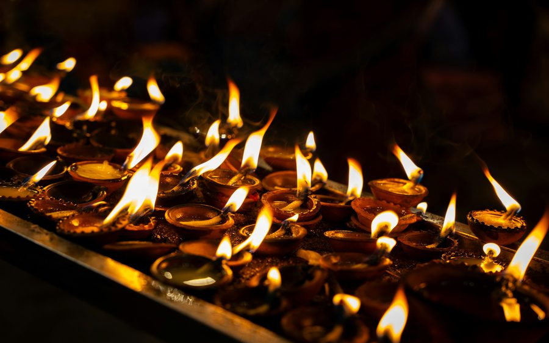

Illustrative photo 1Seetha Amman Kovil · Ashok Vatika
Tradition holds that this is Ashok Vatika, the garden where Ravana kept Sita and where Hanuman found her and gave her Rama’s ring. Today it is a living Hindu temple beside a stream at Seetha Eliya, on the road from Nuwara Eliya to Hakgala. The temple was re-consecrated in May 2024 with water brought from the Sarayu at Ayodhya.
WhereSeetha Eliya · 5–8 km from Nuwara Eliya
Open8 am–1 pm · 2–6:30 pm
EntryFree · puja about LKR 100–200
StepsShort, flat walk
Our tipCome for the morning puja, before the coaches. The floor is cold at 1,800 m, so bring thick socks for after you take your shoes off. Skip the boulders by the stream with older parents.